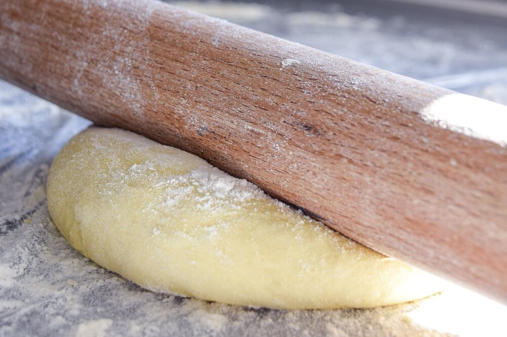

Getting Started
There are 3 main components to making donuts.
- Making Dough
- Cooking/Frying
- Decorating
Dough
Starting with a good base is key. At commercial companies they have their base made and you just follow their recipes and mix.
Then you roll the dough out and cut to the shapes you desire. Remember to let your dough rest through the process, from letting the dough rest after mixing, before you cut your shapes, to letting it proof properly. This is part of what creates the fluffiness and melt-in-your-mouth taste. Totally worth the wait!
There are several recipes for doughnuts that anyone can find online. Try them out and find your favorite one!
Cooking/Frying
Another important factor to making donuts is the kind of oil you fry in and the temperature that you use. Most commercial companies have a donut frying oil that can be a mix of oils that look similar to Crisco that are formulated for high temperatures and have a neutral flavor.
For frying at home, canola oil is a great neutral oil that can handle high temperatures. Most frying temperatures for donuts range from 340 to 370 degrees fahrenheit.
Commercial fryers are large and can handle a large capacity of frying donuts at one time. At home, use a deep pan, like a dutch oven, that you can fry in with high sides that will less likely to splash on you and cause burns. Make sure to fry each side until a nice golden brown color. A fun way at work and at home are flipping donuts with wooden sticks.
Just remember to be careful with the hot oil, especially at home if there are little ones around, because you can get severe burns from the oil.
Decorating
The last part to delicious donuts is the decorating!
Head to the next page for delicious decorating and fun!
Here is a short video demonstrating what it is like to make donuts!